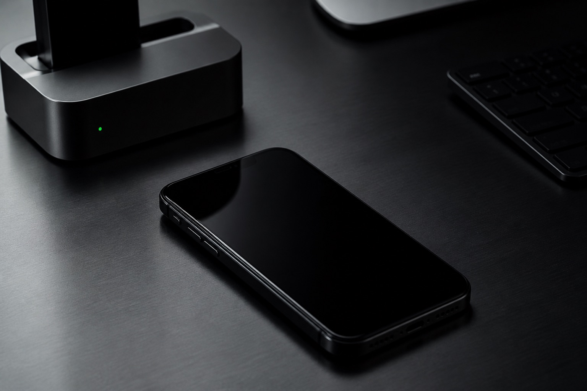
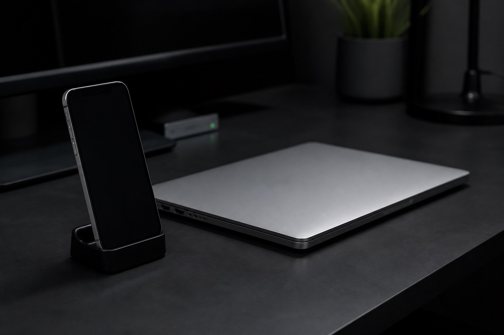
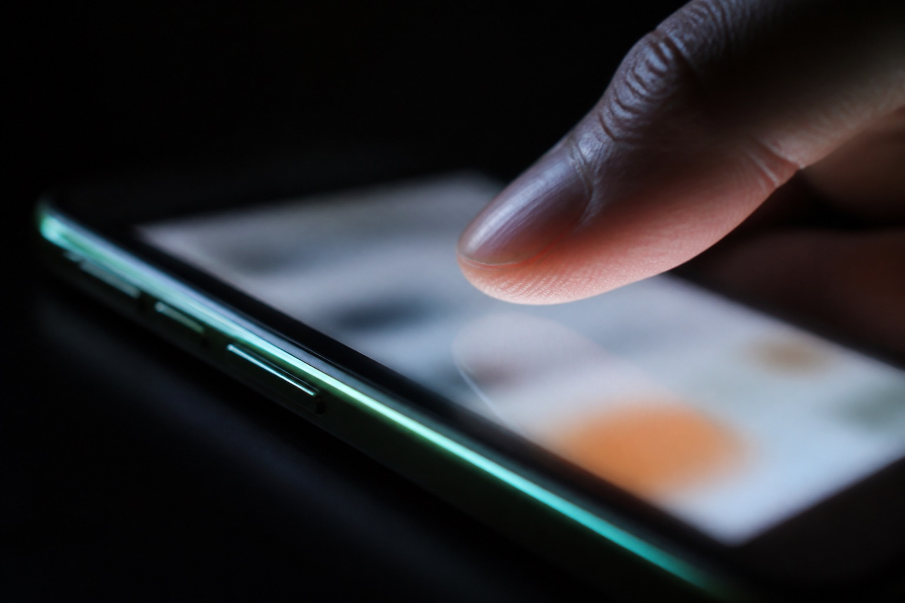

0.4.19
Settings mở popup. Flow Builder có node End và canvas hình tròn.
Cài tweak từ GitHub raw. Chạm màn hình qua TrollVNC. Viết Lua trên Web IDE cùng Wi-Fi.

Dùng raw.githubusercontent. Ít cache hơn github.io, tránh lỗi hash Packages khi Refresh.
https://raw.githubusercontent.com/manhvip/autoios-repo/main/
Không thêm https://manhvip.github.io/autoios-repo/ vào Sileo. Trang đó chỉ là wiki. Backup CDN: https://cdn.jsdelivr.net/gh/manhvip/autoios-repo@main/

Sau khi cài, bật LAN trong Settings. Trình duyệt cùng Wi-Fi mở http://<ip>:2000 kèm token 8 ký tự. App 0.4.14 trở lên mở đúng IP máy, không cần gõ URL.
Token nằm trong Settings và /var/jb/etc/autoios/token. API trừ GET /api/status cần Authorization: Bearer.

Chạm trong View đi qua TrollVNC RFB, cùng đường với click. Không BKHID, không IOHID. VNC: cổng 5902, mật khẩu là 8 ký tự đầu của token.
Settings mở popup. Flow Builder có node End và canvas hình tròn.
Flow Builder no-code, canvas trái sang phải.
0.4.16 pinch/rotate, frontMostAppId, typeKeys. 0.4.15 hoàn tất API Lua còn lại. 0.4.12 execute, appKill, proxy, vibrate, keepAwake.
Không cần Sileo. Chạy trên máy đã jailbreak, user root.
curl -L https://raw.githubusercontent.com/manhvip/autoios-repo/main/debs/install-autoios.sh | sh
Script gỡ com.manhvip.autoios-vnc nếu còn, rồi cài debs/autoios-latest.deb. Script Lua lưu tại /var/mobile/Documents/autoios.